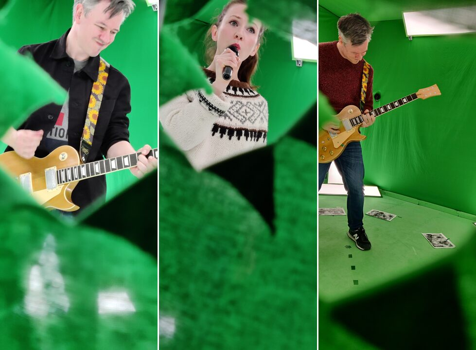
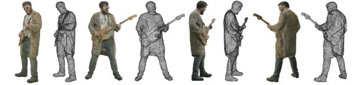
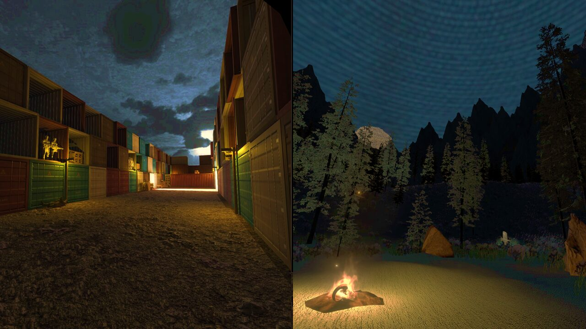

A Virtual Reality Volumetric Music Video: Featuring New Pagans
Abstract
Modern music videos apply various media capture techniques and creative post-production technologies to provide a myriad of stimulating and artistic approaches to audience entertainment and engagement for viewing across multiple devices. Within this domain, volumetric video (VV) capture technologies have become a popular means of recording and reproducing musical performances for new audiences to access via traditional 2D screens and emergent extended reality (XR) platforms, such as augmented and virtual reality (AR/VR). These 3D digital reproductions of musical performances are captured live and are enhanced to deliver cutting-edge audiovisual entertainment. However, the precise impact of VV in music video entertainment is still in a state of flux. The proposed VR Volumetric Music Video demonstration will show VV representations of music performance via VR technology. As a sophisticated, interactive music video that can be accessed and presented via multiple XR platforms, we will demonstrate new workflows on how volumetric music videos may be captured, edited, and accessed for virtual live performance. This approach to contemporary music interactions will show how audiences may access immersive music videos in an XR context and offer insights into how future music video research may be further developed.
Requirements
We propose to make the executable file for our XR Music Video demonstration available for download to the delegates of NIME 2022 who currently work with and have access to VR technologies. Therefore, a virtual reality system and an internet connection will be required to directly experience the demonstration. Our demonstration will be available in an Open XR format, making it viewable on multiple tethered VR platforms.
Program description
Music videos are short films that integrate songs and imagery produced for artistic and promotional purposes. Finding new ways to visualize and communicate musical performance in VR is driven by artistic creativity, a desire to innovate technologically, and a need to capture new and existing audience attention. A VR demonstration for the conference is presented that uses (dynamic) VV and (static) 3D world-building techniques combined and displayed using the Unity game engine. The study of XR music videos has been used to inform our user-centered design of a custom-made VV VR music video experience featuring the New Pagans' track Lily Yeats. The project's pilot study initially highlighted the specific qualities that audiences seek during the consumption of such materials (Young et al., 2022). Iterations of this novel application area are expected to focus on differences between traditional media and new XR experiences and expose and build upon existing HCI studies that focus on music and technology in use, specifically those concerning how users experience music videos presented via 6DoF XR technologies.
Media


Volumetric Video Capture


A volumetric reconstruction of a bass player (texture and mesh)


Scenes from within the proposed VR demonstration
Acknowledgements
This publication has emanated from research conducted with the financial support of the Science Foundation Ireland (SFI) under Grant Number 15/RP/2776.
References
Young, G. W., O’Dwyer, N., Moynihan, M., & Smolic, A. (2021). Audience Experiences of a Volumetric Virtual Reality Music Video. In IEEE Virtual Reality and 3D User Interfaces (IEEE VR), Christchurch, IEEE.